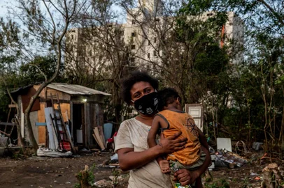

Entenda as causas, consequências e soluções para um mundo mais justo.
O que é desigualdade?
A desigualdade social é causada por uma série de fatores que afetam o acesso das pessoas a recursos
essenciais. Entre as principais causas, destacam-se:
Educação Desigual: A falta de acesso a uma educação de qualidade perpetua o ciclo de
pobreza.
Discriminação: Racismo, sexismo e outras formas de discriminação social aumentam as
barreiras para uma vida igualitária.
Desemprego: A escassez de empregos bem remunerados leva a uma divisão ainda maior entre
as classes sociais.

Consequências da Desigualdade
A desigualdade social tem um impacto devastador não apenas nas pessoas afetadas, mas também em toda a
sociedade. Entre as consequências estão:
Aumento da Pobreza;
Instabilidade Social;
Problemas de Saúde;
fome, desnutrição e mortalidade infantil;
aumento das taxas de desemprego;
comportamentos discriminatórios;
marginalização de parte da sociedade;atraso no progresso da economia do país;
aumento dos índices de violência e criminalidade;
aumento nas injustiças sociais.
Soluções para Reduzir a Desigualdade
A redução da desigualdade requer ações coletivas e políticas públicas eficazes. Algumas soluções incluem:
Investir em Educação: Garantir acesso à educação de qualidade para todos,
principalmente os mais vulneráveis.
Reformas no Sistema de Saúde: Tornar o acesso à saúde universal e igualitário.
Políticas de Inclusão: Implementar ações afirmativas e medidas que favoreçam a inclusão
de minorias.
Promover a representatividade política e ecônomica:Ter vozes em todos os lugares, para
garantir mudanças.
Praticar solidariedadeValor moral que une pessoas de uma comunidade em torno da mesma
causa.
Enfrentar o racismoÉ crucial para criar uma sociedade mais justa e inclusiva para
todos.
Enfrentar a discriminação contra as mulheres Promover a educação sobre igualdade de
gênero desde cedo em escolas, universidades e comunidades.
Sobre a ODS
A ODS 10, da Agenda 2030 da ONU, tem como objetivo reduzir as desigualdades dentro dos países e entre eles. Seu foco é garantir que todas as pessoas, independentemente de sua origem, status socioeconômico, etnia, gênero ou localização geográfica, tenham acesso às mesmas oportunidades e benefícios de desenvolvimento.
Os principais pontos da ODS 10 incluem:
Promoção da inclusão social, econômica e política: Reduzir as desigualdades de renda e melhorar a acessibilidade aos serviços essenciais, como saúde, educação e emprego, para todos os grupos vulneráveis.
Apoio a políticas e ações que promovam a igualdade de oportunidades: Reduzir discriminação e marginalização, especialmente de minorias e populações marginalizadas.
Fortalecimento da cooperação internacional: Ajudar países em desenvolvimento a superar barreiras econômicas e sociais, promovendo um crescimento econômico inclusivo.
A ODS 10 visa uma sociedade mais justa e equitativa, onde as desigualdades sejam diminuídas e o desenvolvimento beneficie todos, sem deixar ninguém para trás.